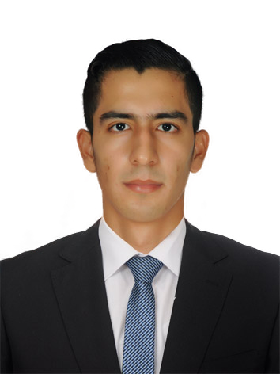
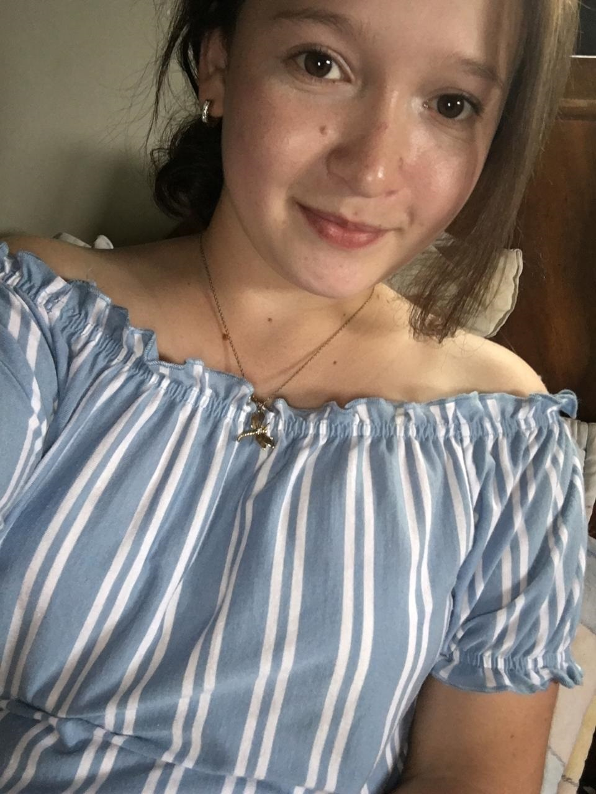
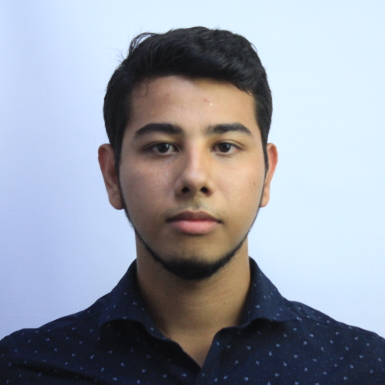
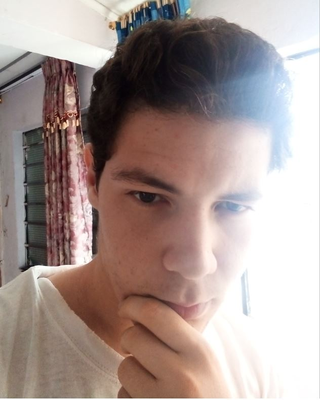

<div class="content" fxLayout="row wrap" fxLayoutGap="16px grid" fxLayoutAlign="center center">
  <div fxFlex="30%" fxFlex.xs="100%" fxFlex.sm="33%">
    <!-- se crean las columnas dependiendo del tamaño de la pantalla, 1 columna si es responsive, 2 columnas si es web -->
    <mat-grid-list [cols]="isMobile ? 1 :2 " rowHeight="1:1" class="card">
   <!-- grid tile para cada elemento-->

   <!-- foto ronal -->
      <mat-grid-tile class="img" >
        <mat-card class="card-persona" fxFlex="0 0 50%">
          
        </mat-card>
      </mat-grid-tile>
       <!--descripción ronal -->
      <mat-grid-tile>
          <p>
          Soy Ronal Landazabal un ser creado por Dios, en busca de cumplir su propósito
          mientras viene a recogerme. Durante mi estadía en este mundo, procuró vivir
          íntegramente. Actualmente estoy terminando la carrera de ing.Sistemas,
          estoy radicado en la ciudad de Bucaramanga, Santander. Entre mis hobbies
          está pilotar drones de carreras, hacer deporte principalmente squahs,
          ver películas o series, charrear con temas de electrónica, bricolaje, DIY, entre otras cosas.
        </p>
      </mat-grid-tile>

      <br>

<!--foto karen -->
      <mat-grid-tile class="img" >
        <mat-card class="card-persona" fxFlex="0 0 50%">
          
        </mat-card>
      </mat-grid-tile>

       <!-- descripción karen-->
      <mat-grid-tile>
        <p>
          Mi nombre es Karen Gómez, tengo 22 años, soy de Floridablanca, Santander.
          Estoy próxima a graduarme de Ingeniería de sistemas de la
          Universidad Autónoma de Bucaramanga.
          Soy una persona dinámica, amable y responsable me gusta siempre sacar lo mejor de mí.
        </p>
      </mat-grid-tile>


      <mat-grid-tile class="img" >
        <mat-card class="card-persona" fxFlex="0 0 50%">
          
        </mat-card>
     </mat-grid-tile>

     <br>

      <!-- descripción Alex-->
     <mat-grid-tile>
       <p>
        Oriundo de la ciudad de Cúcuta, Norte de Santander,
        el día del natalicio es el 16 de noviembre de 1995.
        Vive en la ciudad de Bucaramanga hace 11 años.
        Practica artes marciales y yoga todos los días,
        es selección de Taekwondo en la UNAB
        Le gusta mucho comer y pasear con su perro Zeus.
       </p>
     </mat-grid-tile>
     <br>


     <mat-grid-tile class="img" >
      <mat-card class="card-persona" fxFlex="0 0 50%">
        
      </mat-card>
   </mat-grid-tile>

    <!-- descripción Carlos-->
   <mat-grid-tile>
     <p>
      Es un estudiante de ingeniería de sistemas en la UNAB, residente de la ciudad de Bucaramanga, Colombia, busca ser un reconocido informático, apasionado por la tecnología y los negocios. Desde pequeño le ha gustado investigar sobre los avances de la tecnología y ha logrado comprender como con el pasar de los años ha venido transformando el mundo. Sus pasatiempos favoritos son la musica, leer, escribir, programar y jugar voleibol.
     </p>
   </mat-grid-tile>


    </mat-grid-list>


  </div>
</div>
